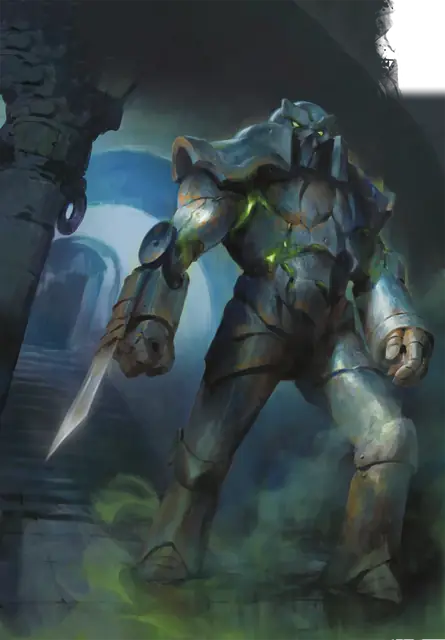

Железный голем
Iron Golem
Большой Конструкт, без мировоззрения

Класс Защиты 20 Инициатива +9 (19)
Хиты 252 (24к10 + 120)
Скорость 30 футов
| мод | спас | ||
|---|---|---|---|
| СИЛ | 24 | +7 | +7 |
| ЛОВ | 9 | −1 | −1 |
| ТЕЛ | 20 | +5 | +5 |
| мод | спас | ||
|---|---|---|---|
| ИНТ | 3 | −4 | −4 |
| МДР | 11 | +0 | +0 |
| ХАР | 1 | −5 | −5 |
Иммунитеты Огонь, Психический, Яд; Испуганный, Истощение, Окаменевший, Отравленный, Очарованный, Парализованный
Чувства Тёмное зрение 120 футов, пассивное Восприятие 10
Языки понимает Общий плюс два других языка, но не говорит
Опасность 16 (15 000 опыта; БВ +5)
Особенности
Поглощение огня. Каждый раз, когда голем должен получить урон Огнём, он не получает урон и вместо этого восстанавливает Хиты в количестве, равном наносимому урону Огнём.
Неизменяемая форма. Железный голем не может перевоплощаться и быть перевоплощён
Сопротивление магии. Железный голем совершает с Преимуществом спасброски от заклинаний и прочих магических эффектов.
Действия
Мультиатака. Голем совершает две атаки Рукой-лезвием или Огненным снарядом в любой комбинации.
Рука-лезвие. Бросок рукопашной атаки: +12, досягаемость 10 фт. Попадание: 20 (3к8 + 7) Рубящего урона плюс 10 (3к6) урона Огнём.
Огненный снаряд. Бросок дальнобойной атаки: +10, дистанция 120 фт. Попадание: 36 (8к8) урона Огнём.
Ядовитое дыхание (Перезарядка 6). Спасбросок Телосложения: Сл 18, каждое существо в 60-футовом Конусе. Провал: 55 (10к10) урона Ядом. Успех: Только половина урона.
Бонус мастерства +5
Среда обитания Любая
Сокровища Любые
Железный голем
Хранитель вечного наследия
Железные големы защищают важные места или предметы, а их магические ядра скрыты за могучей бронёй. Как правило, их внешний вид напоминает двуногих существ, а остальные детали зависят от воображения выковавших их создателей. Многие из железных големов напоминают бронированных стражей или легендарных героев.
В бою они обрушивают на врагов не только свою огромную физическую силу, но и исходящие из их магического ядра всплески энергии в виде огненных снарядов и ядовитых испарений.
На протяжении многих поколений железные големы сохраняют и защищают вверенные им вещи и места. Совершите бросок по таблице «Приказ железного голема» для вдохновения или выберите сами команду, которой железный голем.
Приказ железного голема
| 1к4 | Выполняя приказ, железный голем будет... |
| 1 | Охранять дверь, которая не должна быть открыта, пока не исполнится пророчество. |
| 2 | Испускать ядовитый газ, пока кто-нибудь не назовёт пароль. |
| 3 | Стоять как статуя, пока не наступит час великой нужды. |
| 4 | Охранять место, где покоится могущественный магический предмет. |